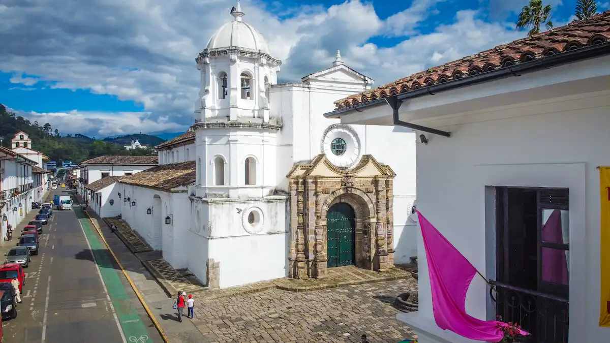

Business Networking Meeting
Connect with local entrepreneurs and build new business relationships.
Date: September 25,2026

Connect with local entrepreneurs and build new business relationships.
Date: September 25,2026
Learn practical strategies to strengthen and grow business.
Date: October 9,2026